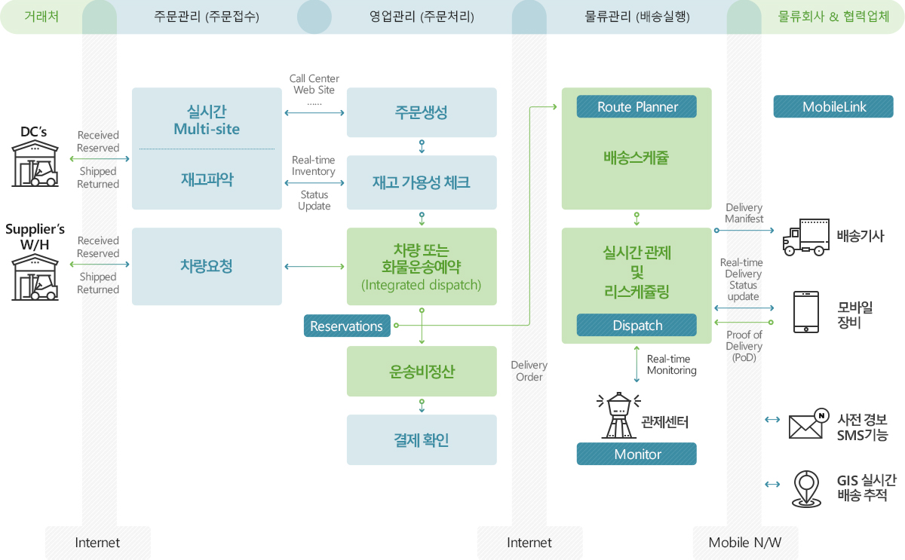

M2M-TMS 서비스 특징
고객의 다양한 오더 접수 기능, 물류 서비스 및 물류 실행 오더로 변환 기능, 각 단위 시스템으로 전송 기능, 배송 형태에 따른 멀티 배송 지원, GPS 위치정보 수정 등으로 이루어져 있습니다.
ERP 주문정보배차계획
정보전달
- 마스터
관리 - 운송비
정산관리 - 차량운행
모니터링 - 배차확정
- 배차계획
관리 - 주문관리
-
-
01 마스터관리
-
- 제품, 고객, 주문 형태 유형
- 출발지, 도착지, 권역, 운임 정보
- 운송 제약조건 및 우선순위
-
-
-
02 주문관리
-
- 고객별/화주별 주문
- 물량배분
- 결품 PO보충 및 월상차 우선순위 관리
-
-
-
03 배차계획 관리
-
- 주문 물량 분석
- 배차 제약조건
-
-
-
04 배차확정
-
- 운행 루트, 운행 운임, 운행거리 확인
- 배차계획 편집 및 확정
- 차량 스케쥴링 배정 확정
-
M2M-TMS 주요 기능
-
스케줄링 배차
- 확정된 배송주문을 대상으로 Route Planner에서 배차 스케줄링을 실행
- 차량별 라우팅 생성 및 관련자에게 배차정보 공유
-
멀티 모델 배송 지원
- Point to Point
- Consolidation
- Distribution
- Combination
-
실시간 관제
- 차량별 GPS 단말에 의해 위치정보 수집 및 관제센터에서 실시간 모니터링
- 긴급상황 시 차량기사에게 긴급메시지 전송
M2M-TMS 비즈니스 구성도
